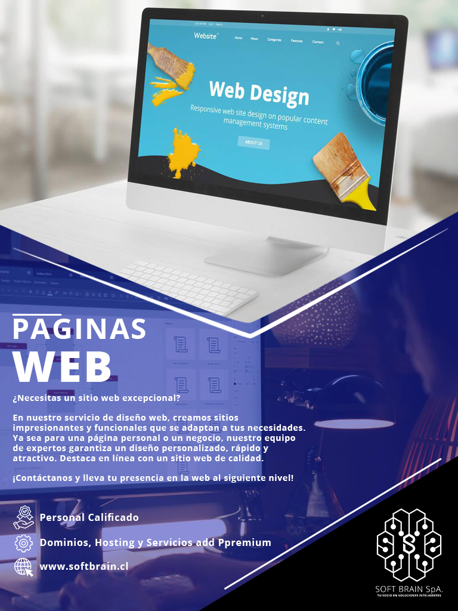
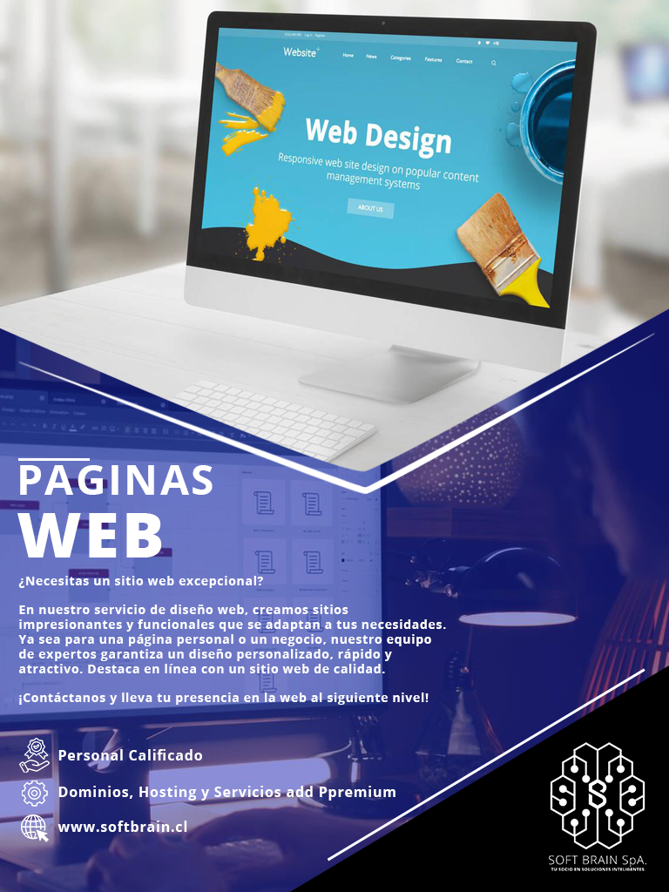

Soft-Brain SpA
 

Preguntas Frecuentes
En Soft-Brain ofrecemos servicios de desarrollo web, marketing en línea y soporte técnico.
Puede contactarnos a través de nuestro formulario de contacto en el sitio web o llamando al número de teléfono proporcionado en la sección "Contacto".
Nuestro equipo de soporte técnico se esfuerza por responder en un plazo de 24 horas hábiles después de recibir su solicitud.
El costo de nuestros servicios varía según las necesidades específicas de cada proyecto. Te recomendamos contactarnos para obtener un presupuesto personalizado y gratuito.
Sí, en Soft-Brain contamos con amplia experiencia en el desarrollo de tiendas en línea. Hemos trabajado con numerosos clientes para crear exitosas plataformas de comercio electrónico que han incrementado sus ventas en línea.
Recomendamos plataformas de comercio electrónico como Shopify, WooCommerce y Magento, dependiendo de tus necesidades y presupuesto. Trabajaremos contigo para determinar la mejor opción para tu negocio.
Sí, ofrecemos servicios de marketing en redes sociales para aumentar la visibilidad de tu negocio en plataformas como Facebook, Instagram y LinkedIn. Creamos estrategias personalizadas para mejorar tu presencia en las redes sociales y atraer a tu público objetivo.
Garantizamos un servicio técnico de alta calidad. Si experimentas problemas con nuestros servicios, nuestro equipo de soporte técnico trabajará diligentemente para solucionar cualquier inconveniente y asegurarse de que tus sistemas funcionen de manera óptima.